Martinique
Période du voyage : Juillet 2026
Une île des Antilles françaises, entre mer des Caraïbes et océan Atlantique, dominée par la montagne Pelée, un volcan encore actif. On y retrouve une culture créole forte, mélange d’influences africaines, européennes et caribéennes. Réputé pour : ses plages de sable blanc ou noir, la montagne Pelée, le rhum agricole, la cuisine créole (colombo, accras), le carnaval, la ville de Saint-Pierre.
Photos
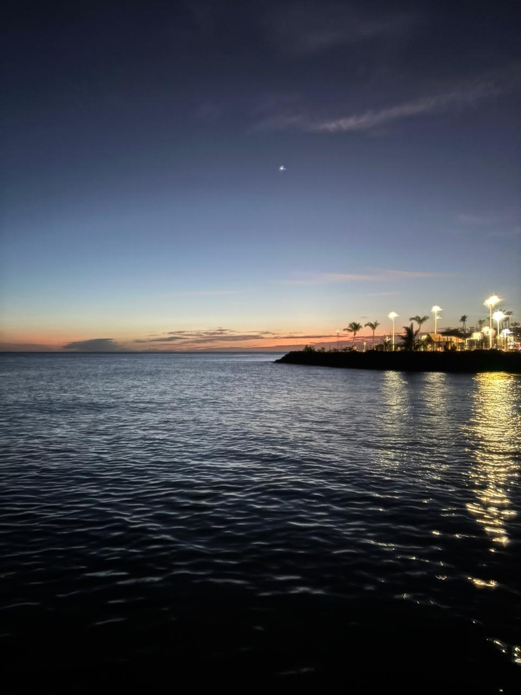
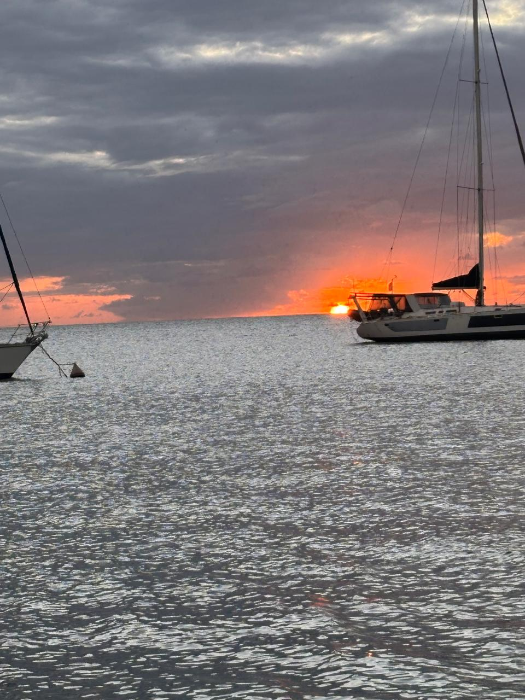
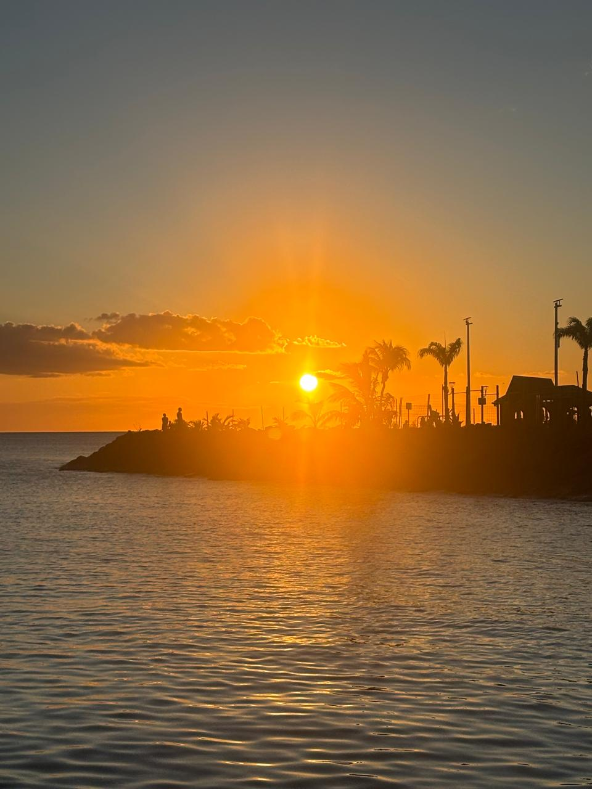
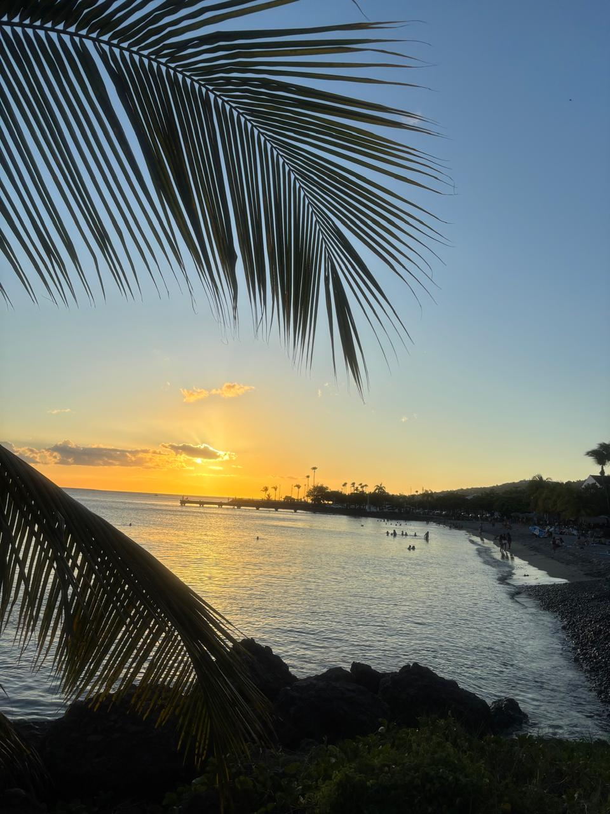
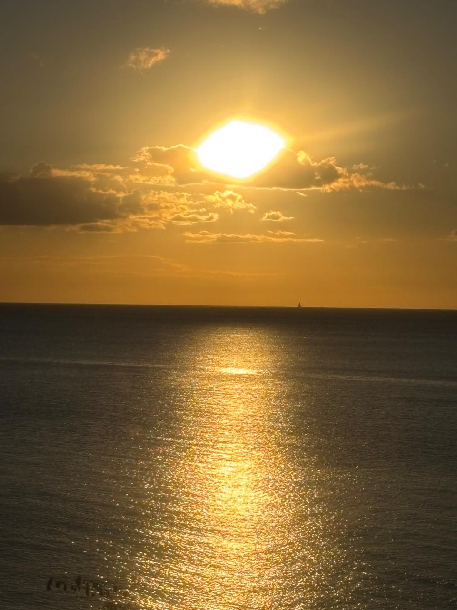
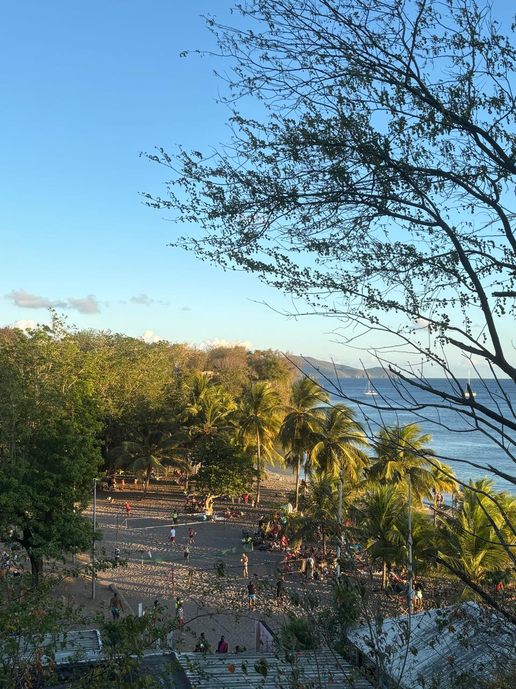
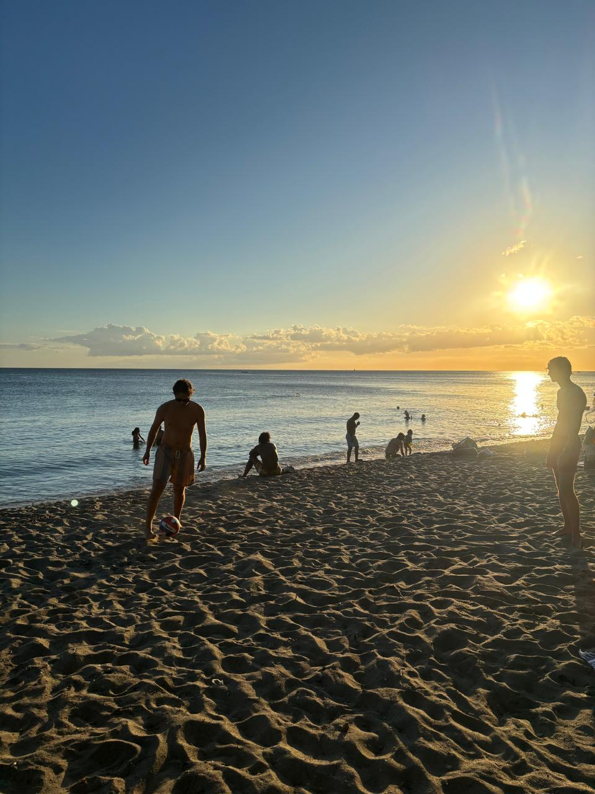
États-Unis
Période du voyage : Juillet 2024
Un pays-continent où chaque région a sa personnalité, des gratte-ciel de New York aux déserts de l’Ouest. Les grands espaces et les parcs nationaux y côtoient des villes parmi les plus célèbres du monde. Réputé pour : New York et la statue de la Liberté, le Grand Canyon, les parcs nationaux (Yellowstone, Yosemite), la route 66, la Californie, la musique de La Nouvelle-Orléans.
Photos


Canada
Période du voyage : Décembre 2023
Un pays immense, aux paysages grandioses, où les villes cosmopolites sont entourées de nature sauvage. Le Québec y apporte une touche francophone, entre vieilles pierres et culture vivante. Réputé pour : les lacs et montagnes des Rocheuses (Banff, lac Louise), les chutes du Niagara, Québec et Montréal, le sirop d’érable, les aurores boréales, la faune sauvage (ours, orignaux).
Photos
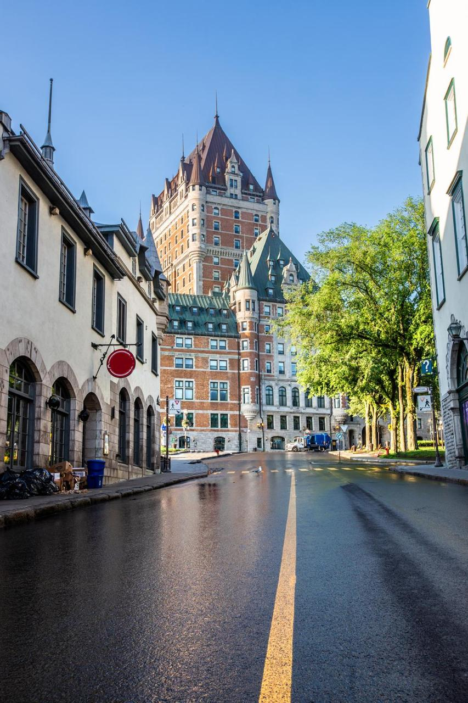
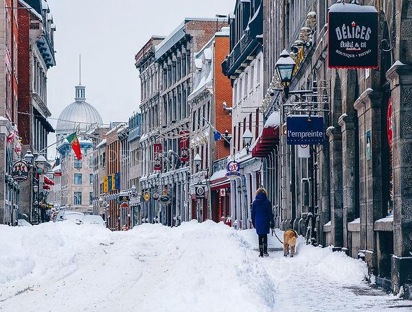
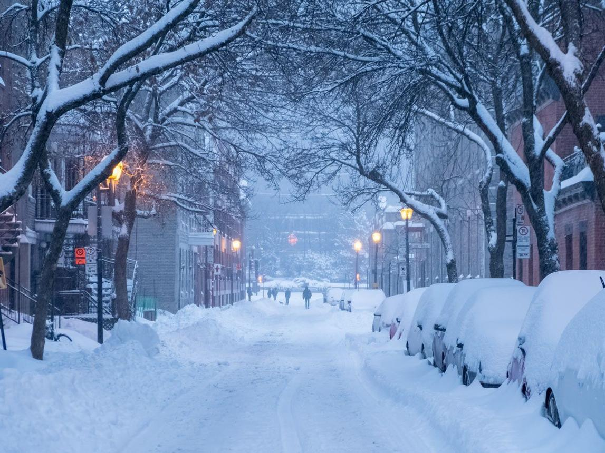
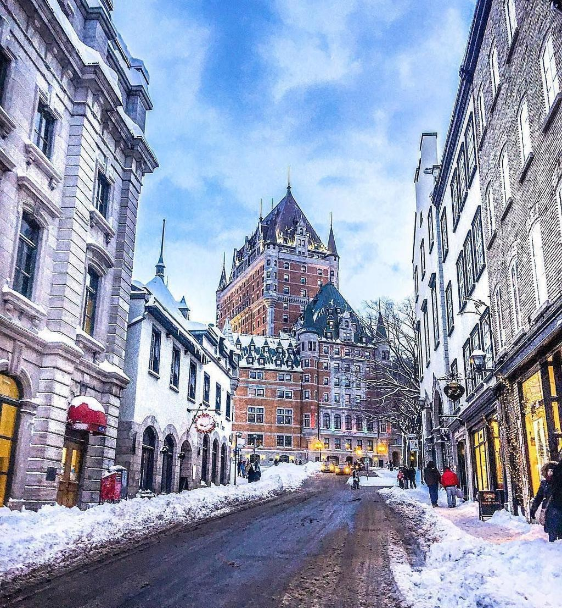